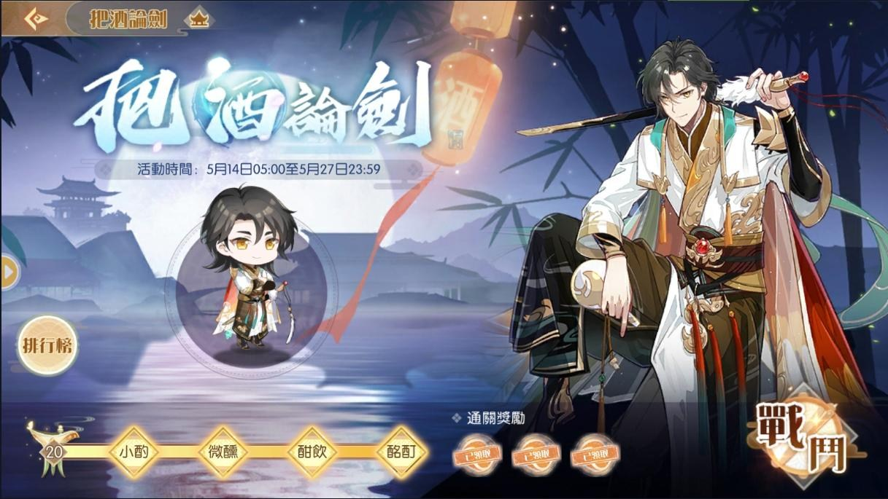

1. 卡池活動時間5/14~5/27
[限定] 太白鴨
紹興醉雞
[二池] 開水白菜(結束後常駐)

2. 活動兌換
2. 活動兌換
混湯酒釀元宵
時裝: 時裝商店(福袋)—蓮花血鴨(紅蓮)、八仙過海鬧羅漢(通達)
本次活動沒有加成食魂沒有掉落關卡
所有關卡(主線、資源) 都會掉落 酒籌
每 12 點體力消耗 掉落 40 酒籌
所以想打膳具就打膳具
想打升星素材就打升星素材
酒籌是累積制的
蒐集到一定的數量會得到對應的獎賞
總共所需 35000 酒籌
每天定時清體力領體力是可以順利畢業的
以下列一些比較重要的獎賞:
累積 7500 紹興醉鴨專屬家具
累積 14500 徽章
累積 31000 天工石×1200
累積 33500 膳具碎片珍×250
累積 34000 太白鴨專屬家具
累積 34500 魂芯×3
累積 35000 將進酒名片背景
3. 高難度副本 [把酒論劍]

終於進到這次的重點了
高難度副本的特色就是獎勵少 關卡難
關卡總共20層，每層皆由太白鴨駐守
不用體力挑戰，無限次挑戰機會
通關獎勵除了酒籌 通關第10、20層有徽章獎勵
除了上述這些
同時會開放主線第8章
還會有新家具